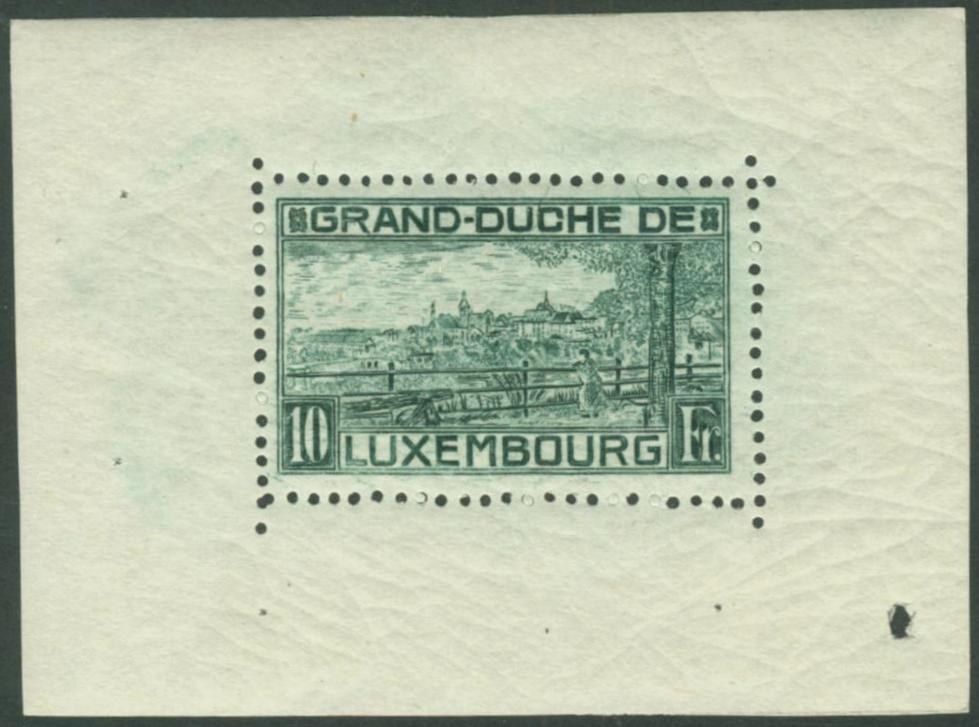
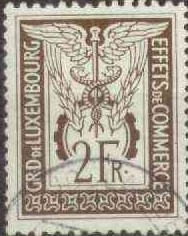

Return To Catalogue - Luxembourg 1859-1881 - Luxembourg 1852-1881 - Luxembourg 1882-1913
Note: on my website many of the
pictures can not be seen! They are of course present in the
catalogue;
contact me if you want to purchase it.
10 c red 12 1/2 c green 15 c black 17 1/2 c brown (1917) 25 c blue 30 c brown 35 c blue 37 1/2 c brown 40 c orange 50 c black 62 1/2 c green 87 1/2 c orange (1917) 1 F brown 2 1/2 F red 5 F violet Surcharged


'= 7 1/2' on 10 c red (1918) '= 17 1/2' on 30 c brown (1916) '= 20' on 17 1/2 c brown (1921) '= 25' on 37 1/2 c brown (1923) '= 75' (red) on 62 1/2 c green (1922) '= 80' on 87 1/2 c orange (1922) '= 87 1/2 c =' on 1 F brown (1916) Overprinted 'Officiel' in fancy letters (official stamps)
10 c red 12 1/2 c green 15 c black 17 1/2 c brown (1917) 25 c blue 30 c brown 35 c blue 37 1/2 c brown 40 c orange 50 c black 62 1/2 c green 87 1/2 c orange (1917) 1 F brown 2 1/2 F red 5 F violet Overprinted 'CARITAS' and surcharged (17 April 1924)
12 1/2 c + 7 1/2 c green 35 c + 10 c blue (red overprint) 2 1/2 F + 1 F red 5 F + 2 F violet
Fiscal stamps, example:
I have also seen a 12 1/2 c green with the same overprint ('Droits de statistique'), but with no surcharge.

2 c brown 3 c green 6 c violet 10 c green 10 c olive (1924) 15 c brown 15 c red 15 c green (1924) 20 c orange (1922) 20 c green (1925) 25 c green (perforated) 25 c green (imperforate for a philatelic exhibition 27-31 August 1922) 30 c red (perforated) 30 c red (imperforate for a philatelic exhibition 27-31 August 1922) 40 c orange 50 c blue 50 c red (1924) 75 c red (1922) 75 c blue (1924) 80 c black (1922) Surcharged
'= 5' on 10 c green (1925) '= 15' on 20 c green (1928) '= 35' on 40 c orange (1928) '= 60' on 75 c blue (1928) '= 60' on 80 c black (1928)

Overprinted 'Officiel' in fancy letters (1922 official stamps) 2 c brown 3 c green 6 c violet 10 c green 10 c olive (1924) 15 c brown 15 c green (1924) 15 c red (1926) 20 c orange 20 c green (1926) 25 c green 30 c red 40 c orange 50 c blue 50 c red (1924) 75 c red 75 c blue (1924) 80 c black (overprinted in red or black)

1 F red (castle Vianden) 1 F blue (castle, 1924) 2 F blue (factory in Esch) 2 F brown (factory, 1924) 5 F violet (Adolf bridge across the Alzette) Overprinted 'Officiel' in fancy letters (1922, official stamps)
1 F red 1 F blue (overprint red) 2 F blue (overprinted red or black) 2 F brown 5 F violet (overprinted red or black)
The 2 F brown was sold in a minisheet containing 2 stamps for the philatelic exhibition in Dudelange in 1937 (inscription 'EXPOSITION NATIONALE DE TIMBRES-POSTE DUDELANGE 1937').
5 c on 10 c green (Clervaus monastry) 10 c on 15 c red 10 c on 25 c green (Luxemburg City)
These stamps appeared to raise funds for a war
memorial. A
ll three values exist with additional overprint '+ 25 * 27 mai
1923*' (in red on the 10 c and 25 c values) issued during the
visit of crownprince Leopold of Belgium.
10 F green (RRR) 10 F black (February 1923)
The 10 F green was printed in a minisheet with only 1 stamp at the occasion of the birth of Princess Elizabeth.

Forgery of such a minisheet
The Serrane guide mentions that a certain forger C. in Paris made forgeries of these stamps. This might have been the forger René Carème.
3 F blue (October 1923) Overprinted 'Officiel' in fancy letters in red (on top or below) 3 F blue
5 c (+ 5 c) violet 30 c (+ 5 c) orange 50 c (+ 5 c) brown 1 F (+ 10 c) blue
5 c violet 10 c green 15 c black (1930) 20 c orange 25 c green 25 c brown (1926) 30 c green (1926) 30 c violet (1930) 35 c violet (1928) 35 c green (1930) 40 c olive 50 c brown 60 c green (1928) 65 c brown 70 c violet (1934) 75 c red 75 c light brown (1926) 80 c brown 90 c red (1926) 1 F black 1 F red (1930) 1 1/4 F blue 1 1/4 F yellow (1930) 1 1/4 F green (1931) 1 1/4 F red (1934) 1 1/2 F blue 1 3/4 F blue (1930) Surcharged
10 c on 30 c green (1930) 30 c on 60 c green (1939) 15 c on 20 c green (1928) 60 c on 65 c brown (1928) 60 c on 75 c red (1928) 60 c on 80 c brown (1928) 70 c on 75 c brown (1934) 75 c on 90 c red (1930) 1 3/4 F on 1 1/2 F blue (1930) With fancy slanting overprint 'Officiel'(1924)
5 c violet 10 c green 20 c orange 25 c green 25 c brown (1927) 30 c green (1927) 40 c olive 50 c brown 65 c brown 75 c red 75 c light brown (1927) 80 c brown 1 F black 1 1/4 F blue 1 1/2 F blue Overprinted with fancy straight overprint 'Officiel' (1928)
5 c violet 10 c green 15 c black (1930) 20 c orange 25 c brown 30 c green 30 c violet (1930) 35 c violet 35 c green (1930) 40 c olive 50 c brown 60 c green 70 c violet 75 c light brown 90 c red 1 F black 1 F red (1930) 1 1/4 F yellow (1930) 1 1/4 F green (1931) 1 1/2 F blue 1 3/4 F blue
A new set, but with the word 'LUXEMBOURG' and the value inscription in white and the background different was issued in 1944.
5 c (+ 5 c) black and lilac 40 c (+10 c) black and green 50 c (+15 c) black and yellow 75 c (+20 c) black and lilac 1.50 F (+30 c) black and blue
This set was issued 25 December 1926.
25 c violet 50 c green 75 c red 1 F black 1 1/2 F blue
10 c (+ 5 c) blue and black 50 c (+ 10 c) brown and black 75 c (+ 20 c) orange and black 1 F (+ 30 c) red and black 1 1/2 F (+ 50 c) blue and black
This set was issued 1 December 1927.
2 F black (perforated, 16 October 1928) 2 F (+ 50 c) black (imperforate, 1935) With fancy black overprint 'Officiel' 2 F black (perforated)
The imperforate stamp was issued for the stamp exhibition in Esch-Alzette in 1935.
10 c (+ 5 c) green and lilac 60 c (+ 10 c) brown and green 75 c (+ 15 c) red and green 1 F (+ 25 c) green and brown 1 1/2 F (+ 50 c) yellow and blue
This set was issued on 12 December 1928.
10 c (+ 10 c) brown and green 35 c (+ 15 c) green and brown 75 c (+ 30 c) orange and black 1 1/4 F (+ 50 c) lilac and green 1 3/4 F (+ 75 c) blue and black
10 c (+ 5 c) green and olive 75 c (+ 10 c) brown and green 1 F (+ 25 c) red and blue 1 1/4 F (+ 75 c) yellow and black 1 3/4 F (+ 1 1/2 F) blue and brown
5 c red 10 c olive
20 F green
10 c (+ 10 c) brown and black 75 c (+ 10 c) lilac and green 1 F (+ 75 c) green and black 1 1/4 F (+ 75 c) violet and green 1 3/4 F (+ 1 1/2 F) blue and black
10 c (+ 5 c) olive 75 c (+ 10 c) violet 1 F (+ 25 c) red 1 1/4 F (+ 75 c) brown 1 3/4 F (+1 1/2 F) blue
This set was issued on 8 December 1932.
10 c (+ 5 c) brown 75 c (+ 10 c) violet 1 F (+ 25 c) red 1 1/4 F (+ 75 c) brown 1 3/4 F (+ 1 1/2 F) blue
This set was issued on 22 December 1933.
5 F green With fancy overprint 'Officiel' 5 F green
10 c violet 35 c green 75 c red 1 F lilac 1 1/4 F orange 1 3/4 F blue
This set was issued on 1 December 1934.
10 F green
10 c violet 35 c green 70 c brown 1 F lilac 1.25 F light brown 1.75 F blue
10 c brown 35 c green 70 c orange 1 F red 1.25 F violet 1.75 F blue
10 c + 5 c brown 35 c + 10 c green 70 c + 20 c black 1 F + 25 c red 1.25 F + 75 F violet 1.75 F + 1.50 F blue
35 c + 10 c green 70 c + 10 c dark brown 1.25 F + 25 c red 1.75 F + 50 c grey 3 F + 2 F brown 5 F + 5 F black
10 c + 5 c lilac and black 35 c + 10 c green and black 70 c + 20 c brown and black 1 F + 25 c red and black 1.25 F + 75 c light blue and black 1.75 F + 1.50 F blue and black
35 c green (arms) 50 c orange (Guillaume I) 70 c green (Guillaume II) 75 c brown (Guillaume III) 1 F red (Henri) 1.25 F lilac (Adolf) 1.75 F blue (Guillaume IV) 3 F brown (Marie-Anne) 5 F black (Marie-Adelaide) 10 F red (Charlotte)
2 F red With cross overprint and surcharged (tuberculosis issue) 2 F + 50 c black
2 F red (Jean) 3 F green (Felix) 5 F blue (Charlotte)
These stamps were issued in a minisheet with inscription '1919 1939'.
5 c red-brown 10 c black 20 c orange 25 c dark brown 30 c red 35 c green 40 c blue 50 c violet 60 c orange 70 c red 70 c green 75 c brown 1 F olive 1 1/4 F orange 1 1/2 F orange 1 3/4 F blue 2 F red 2 1/2 F grey 3 F green 3 1/2 F light blue 5 F green 10 F red 20 F blue Surcharged (refugee relief, 1944) +50 c on 5 c red-brown +50 c on 10 c black +50 c on 25 c dark brown +50 c on 35 c green +50 c on 50 c violet +50 c on 70 c red +50 c on 1 F olive +50 c on 1 1/4 F orange +50 c on 1 3/4 F blue +50 c on 5 F green +50 c on 10 F red +50 c on 20 F blue
20 c brown 30 c green 60 c violet 75 c red-brown 1.20 F red 1.50 F lilac 2.50 F blue
5 c orange 10 c blue 15 c olive-green 20 c red-brown 25 c grey 30 c light green 40 c red 50 c orange 60 c red-brown 80 c green 1 F red 1.20 F grey 1.25 F olive-brown 1.50 F blue 1.60 F dark green 2 F lilac 2.50 F red 3 F blue 3.50 F lilac 4 F blue 5 F violet 6 F lilac 8 F green Minisheet containing three stamps, inscription '1919-1949' at the bottom 8 + 3 F blue 12 + 5 F green 15 + 7 F brown
5 c green and black 5 c green and red (1922) 10 c green and black 10 c green and red (1922) 12 1/2 c green and black 20 c green and black 20 c green and red (1922) 25 c green and black 25 c green and red (1922) 30 c green and red (1922) 35 c green and red (1922) 50 c green and black 50 c green and red (1922) 60 c green and red (1928) 70 c green and red (1935) 75 c green and red (1928) 1 F green and black 1 F green and red (1922) 2 F green and red (1928) 3 F green and red (1928) Surcharged
'15 =' on 12 1/2 c green and black (1920) '30 =' on 25 c green and black (1920)
5 c grey 25 c orange 50 c green 1 F red 5 F blue
50 c green (1933) 75 c brown 1 F red 1 1/4 F lilac 1 3/4 F blue 3 F black (1933)
Examples:



{kind=link}
{kind=link}
{kind=link}
{kind=link}